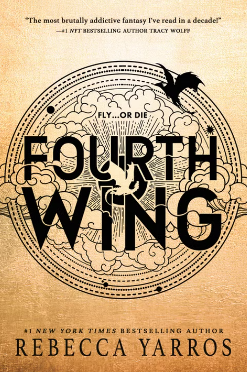
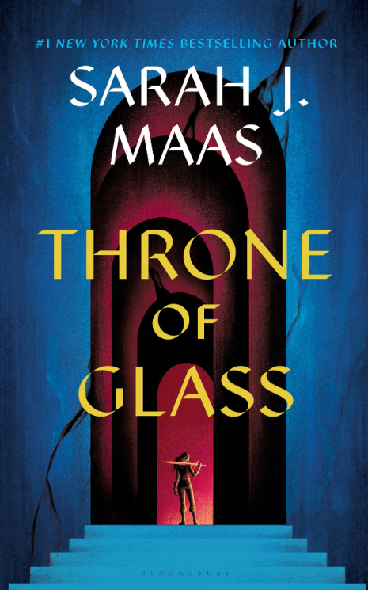
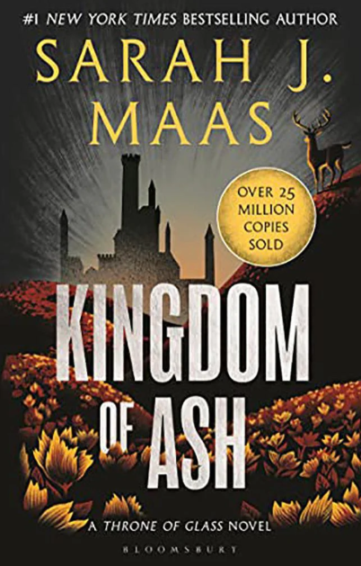
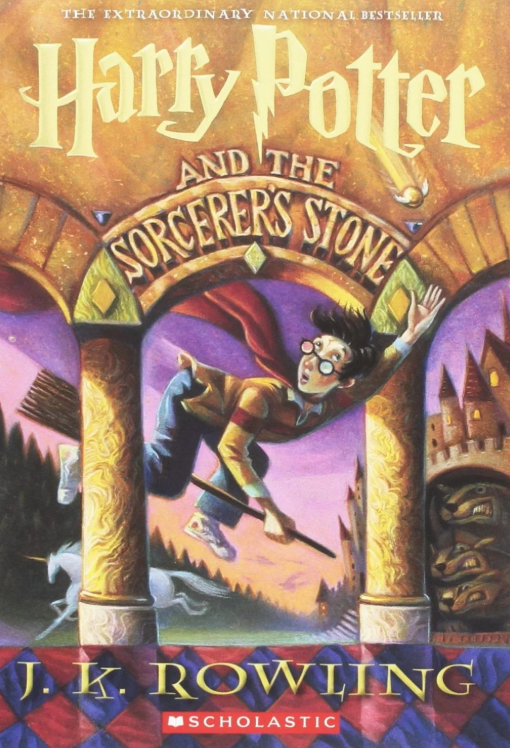

| Book Title | Fourth Wing | Throne of Glass | Kingdom of Ash | Harry Potter |
|---|---|---|---|---|
| Image of Cover |  |
 |
 |
 |
| Author | Rebecca Yarros | Sarah j. Maas | Sarah j. Maas | J. K. Rowling |
| Summary | Fourth Wing is a fantasy novel. It starts by following the main character Violent Sorrengail who was a 20 year old that was trained her entire life to be a scribe. She gets forced into the riders quadrant at the military college and has to survive and find ways to stay alive. | This is the first book of an eight book serires. Its a fantasy novel about an assassin who was offered her freedom if she could win a competition to become the kings champion. | This is the last book of the Throne of glass series where Aelin and all of her allies have a final battle to save their world. | This book is about an 11 year old boy who discovers that he is a wizard and gets welcomed to Hogwarts. |